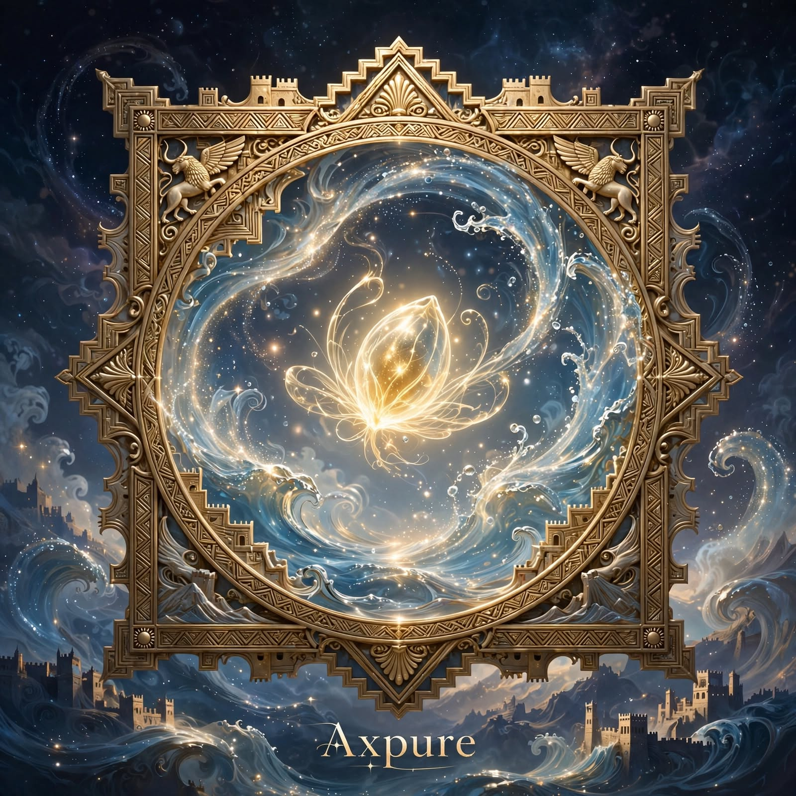

Add images to this slideshow
Preview files from your device, including a synced OneDrive folder. Nothing is uploaded or published. Up to 50 images, 10 MiB each, 100 MiB total; JPEG, PNG, WebP or GIF, up to 20 megapixels each. Local images disappear when you reload or clear them.
· Open avatar companion chat →
Urartuhi whisper
Ask about the current public artwork. Sending uses the AI backend; local images are never sent.
Choose Narrate or enter a question.
Continue to avatar companion chat →Additional pieces
About this gallery
An Instant In Eternity presents The Well Of
Pure Source, Axpure as the centerpiece of this gallery.
Additional pieces are loaded from
images/manifest.json -- add an image file under
images/ and one matching entry to that manifest to add
a new piece to the gallery; there is no fixed limit on how many
entries it can hold. The thumbnail grid below is a masonry layout
(like Pinterest) that keeps each image's natural proportions, and
pieces can be tagged for filtering as the collection grows. See the
README for the exact format.